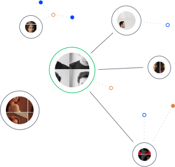
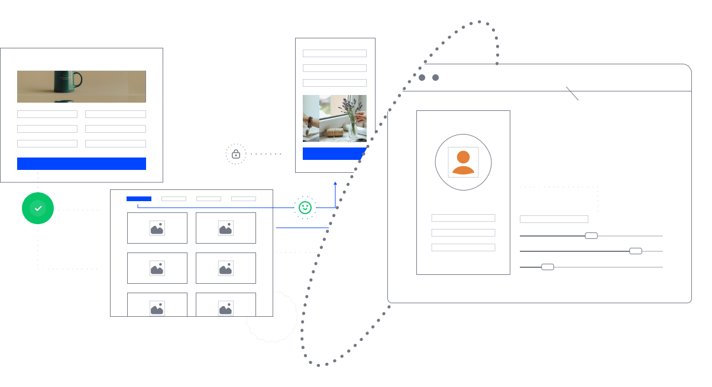
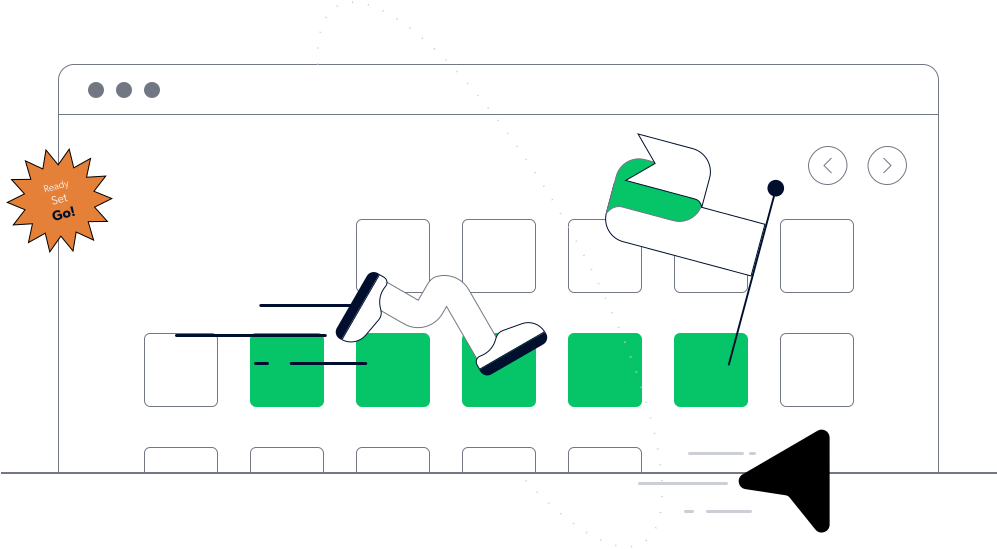

<div class="cx">
    <div class="cx__wrapper">
        <section class="cx-header">
            <div class="cx-header__wrapper">
                <div class="info-line1">
                    
                    <p>CUSTOMER</p>
                </div>
                <div class="info-line2">
                    <p>EXPERIENCE</p>
                    
                </div>
                <div class="info-text">
                    Creating a unified, high-quality digital customer experience ensures customers feel valued. Putting ourselves in an omnichannel mindset, we map the various digital channels and assets of a brand in order to understand relationships between them.
                    <br><br>
                    We then connect the data behind those channels to create an enhanced, seamless user experience.
                </div>
            </div>
        </section>
        <section class="cx-persona">
            <div class="cx-persona__wrapper">
                <div class="cx-persona-title">
                    <h2>Person Research &<mark>User Journey</mark></h2>
                </div>
                <div class="cx-persona-subtitle">
                    Getting to know the user
                </div>
                <div class="cx-persona-text">
                    <p>Our customer experience process begins by working with our client to identify the different types of users they are targeting. Having outlined one or more personas with the relevant characteristics, we then carry out in-depth interviews with potential users to discover and prioritize</p>
                    <p>their wants, needs/ pain points, and challenges. Taking everything that we have learned from these one-on-one encounters, we then shape the product vision, sketch out specific features and plot the user journey, from A to Z.</p>
                </div>
                <div class="cx-persona-img">
                    <div class="cx-persona-img__img1"></div>
                    <div class="cx-persona-img__img2"></div>
                </div>
            </div>
        </section>
        <section class="cx-design">
            <div class="cx-design__wrapper">
                <div class="cx-design-title">
                    <h2>Design <mark>Sprint</mark></h2>
                </div>
                <div class="cx-design-subtitle">
                    Hitting a design home run
                </div>
                <div class="cx-design-img">
                    
                </div>
                <div class="cx-design-text">
                    <p>With the users defined and an idea of the product – either general or specific at this stage - we embark on a Design Sprint. Over the course of up to five days, we look at the product from every possible angle, weighing up the pros and cons of every feature, and examining every detail to create the product customers dream of. Incorporating a high level of characterization, the resulting </p>
                    <p>prototype is then subjected to testing by a representative sample of target users.<br><br>
                        Taking on board their feedback to fix, enhance or even ditch specific features, we end up with a clear idea of how the product will look and behave - and crucially, what users think about it - leaping months ahead in the product development process</p>
                </div>
            </div>
        </section>
    </div>
</div>